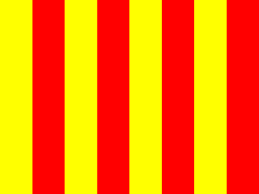
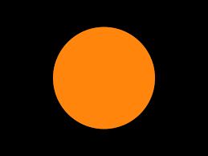

Formula One (also known as Formula 1 or F1) is the highest class of international racing for single-seater formula racing cars sanctioned by the Fédération Internationale de l'Automobile (FIA).
The word formula in the name refers to the set of rules to which all participants' cars must conform.A Formula One season consists of a series of races, known as Grands Prix, which take place worldwide on both purpose-built circuits and closed public roads.
A points system is used at Grands Prix to determine two annual World Championships: one for drivers, the other for constructors. Each driver must hold a valid Super Licence, the highest class of racing licence issued by the FIA.The races must run on tracks graded "1" (formerly "A"), the highest grade-rating issued by the FIA.
A number of Grand Prix racing organisations had laid out rules for a world championship before World War II, but due to the suspension of racing during the conflict, the World Drivers' Championship did not become formalised until 1947.
The first world championship race took place at Silverstone in the United Kingdom in 1950. Giuseppe Farina in his Alfa Romeo won the first World Championship for Drivers in 1950, narrowly defeating his teammate Juan Manuel Fangio.
However, Fangio won the title in 1951, 1954, 1955, 1956, and 1957 (his record of five World Championship titles stood for 45 years until Michael Schumacher took his sixth title in 2003). Fangio's streak was interrupted (after an injury) by two-time champion Alberto Ascari of Ferrari.
Beginning in the 1970s, Bernie Ecclestone rearranged the management of Formula One's commercial rights; he is widely credited with transforming the sport into the multibillion-dollar business it now is.
On the track, the McLaren and Williams teams dominated the 1980s and 1990s, with Brabham also being competitive during the early part of the 1980s,
conditions
- Each driver may use no more than thirteen sets of dry-weather tyres,
- four sets of intermediate tyres
- and three sets of wet-weather tyres during a race weekend
A Formula One Grand Prix event spans a weekend. It begins with two free practice sessions on Friday (except in Monaco, where Friday practices are moved to Thursday), and one free practice on Saturday.
Additional drivers (commonly known as third drivers) are allowed to run on Fridays, but only two cars may be used per team, requiring a race driver to give up their seat.
A qualifying session is held after the last free practice session. This session determines the starting order for the race on Sunday
| S.NO | Flag Color | Detail |
|---|---|---|
| 1 | Green | This is usually shown following a yellow flag to indicate that the hazard has been passed. |
| 2 | Yellow | Indicates a hazard on or near the track |
| 3 |  | Slippery track, due to oil, water, or loose debris. Can be seen 'rocked' from side to side (not waved) to indicate a small animal on track. |
| 4 | Blue | A blue flag indicates that the driver in front must let faster cars behind them pass because they are being lapped. |
| 5 | White | Indicates that there is a slow car ahead. Often waved at the end of the pit lane when a car is about to leave the pits. |
| 6 |  | Car is damaged or has a mechanical problem, must return to the pit lane immediately. Will be accompanied by driver's number |
| 7 | Red | A red flag immediately halts a race or session when conditions become too dangerous to continue. |
The expense of Formula One has seen the FIA and the Formula One Commission attempt to create new regulations to lower the costs for a team to compete in the sport.Formula 1 has launched a plan to become carbon neutral by 2030. By 2025, all events should become "sustainable", including eliminating single-use plastics and ensuring all waste is reused, recycled or composted
In January 2020, FIA and Formula One signed the United Nations "Sports for Climate Action" framework. After the signing was announced, FIA President Jean Todt said: "As an international Federation comprising 244 members in 140 countries and the leader in motor sport and mobility development, we are fully committed to global environmental protection. The signing of this UN Sports for Climate Action Framework reinforces the momentum that has been growing in our Federation for many years. Since the introduction of the hybrid power unit in F1 to the creation of the Environment and Sustainability Commission, the entire FIA community has been investing time, energy and financial resources to the benefit of environmental innovations. We aim to inspire greater awareness and best practice in sustainability motor sport standards.